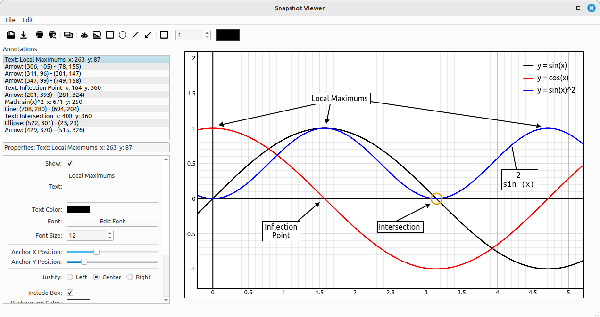

View Options#
Toggle Axes#
Toggles the x and y axes on and off.
Toggle Grid#
Toggles the rectangular coordinate grid on and off.
Toggle Polar Grid#
Toggles the polar coordinate grid on and off. Note that when using the polar coordinate grid you should be in 1-1 aspect ratio mode.
Reset View Window#
Resets the view area to \([-10, 10] \times [-10, 10]\).
Center at Origin#
Resets the center to the origin. Note that this will simply move the center, it will not change the lengths of the axes or the viewing aspect ratio.
Translate Center to (x, y)#
This option allows the user to set the center of the viewing area to any point \((x, y)\). When this option is selected a dialog box will appear allowing the user to select the x and y values for the new center. Note that this will simply move the center, it will not change the lengths of the axes or the viewing aspect ratio.
Set View Window to 1-1#
This will reset the length of the y axis to give an aspect ratio of 1 with the x axis. Note that only the y axis is altered, the x axis and the center of the viewing area is not changed.
Snapshot Viewer#
This option will open the Snapshot Viewer and load in an image of the current plot. The snapshot viewer window has options for copying the image to the clipboard, opening ans saving images, printing and print preview, as well as a quick tool in the toolbar to add a border to the image. It also has options for inserting some simple annotations, text boxes, mathematical expressions, rectangles, ellipses, lines, and arrows. The tool is discussed in detail in its own section Snapshot Viewer.

Snapshot Viewer#
Open in Advanced Plot Creator#
This opens the current graph in the Advanced Plot Creator tool. The graphics systems in CLAE were designed to be as fast as possible. The goal was for quick navigation of the plots and minimal lag. To achieve this, more advanced graphing techniques needed to be dropped and quicker, but less visually pleasing, techniques used. This is why you see asymptotes in plots. For example, with \(y = \tan{\left(x \right)}\), the plot looks like,

\(y = \tan{\left(x \right)}\)#
when it should look like,

\(y = \tan{\left(x \right)}\)#
The top image is fine in a classroom or exploration setting since the asymptotes can easily be explained away or ignored as part of the graph. On the other hand, for a report or handout we would want an image more like the bottom one. This is why we created the Advanced Plot Creator for 2D graphs. This tool will enhance certain categories of plots to make them more visually pleasing (and accurate), primarily for use in reports or handouts. The tool is fairly extensive and is discussed in detail in its own section Advanced Plot Creator.
View Information#
This brings up a dialog box displaying the current center of the viewing area as well as the x and y axes bounds.